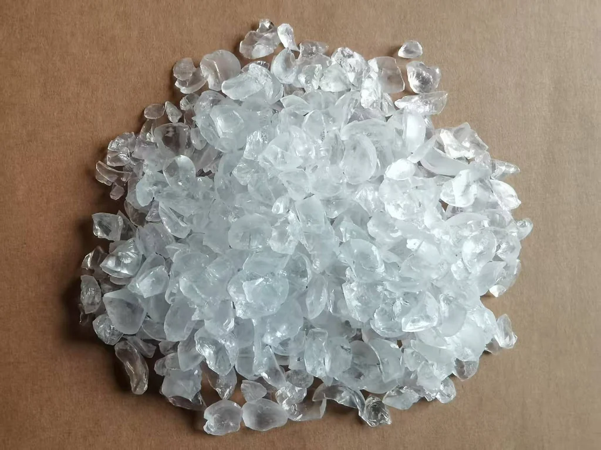
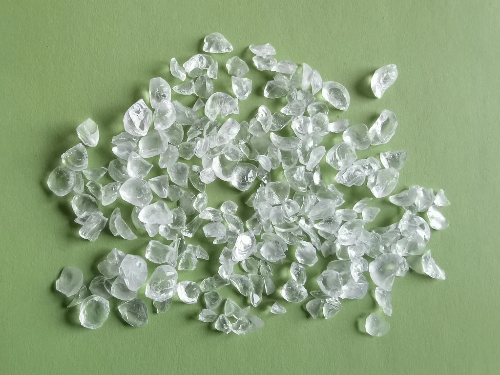
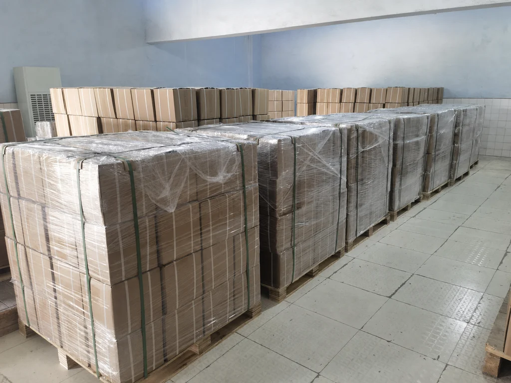
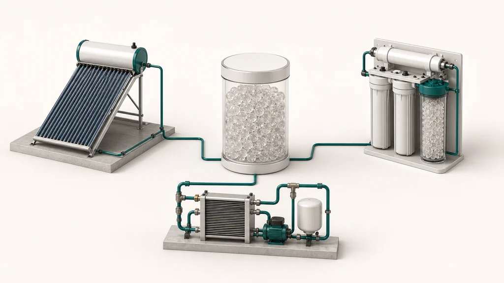
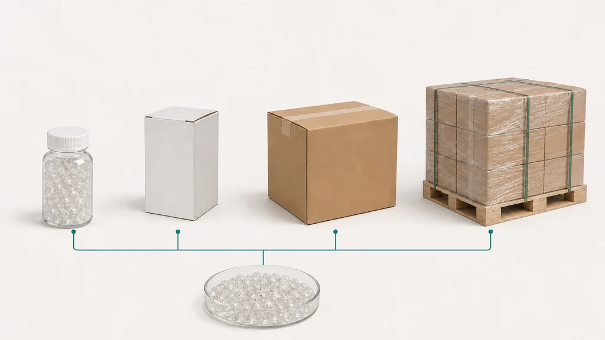

Viên Siliphos
19 mm
Yuchen Water · OEM/ODM · vật liệu lọc chuyên dụng
Viên Siliphos — vật liệu lọc chuyên dụng. polyphosphate · Viên Siliphos Ø19 mm, Ø10 mm, Ø3–8 mm; hạt vỡ 6–12 mm / 4–10 mm; bột. Thông số kỹ thuật có thể thay đổi tùy theo cấu hình được chọn. Vui lòng xác nhận các yêu cầu cuối cùng trước khi báo giá.

01 · Viên Siliphos · polyphosphate
Viên Siliphos — vật liệu lọc chuyên dụng. polyphosphate · Viên Siliphos Ø19 mm, Ø10 mm, Ø3–8 mm; hạt vỡ 6–12 mm / 4–10 mm; bột. Thông số kỹ thuật có thể thay đổi tùy theo cấu hình được chọn. Vui lòng xác nhận các yêu cầu cuối cùng trước khi báo giá.



02 · Viên Siliphos · hạt vỡ · bột
Thông số kỹ thuật có thể thay đổi tùy theo cấu hình được chọn. Vui lòng xác nhận các yêu cầu cuối cùng trước khi báo giá.
03 · Ứng dụng · chất ức chế cáu cặn
Ứng dụng: đun nóng nước bằng năng lượng mặt trời · lọc nước · các mạch nước trong thiết bị. Thông số kỹ thuật có thể thay đổi tùy theo cấu hình được chọn. Vui lòng xác nhận các yêu cầu cuối cùng trước khi báo giá.

Thông số kỹ thuật có thể thay đổi tùy theo cấu hình được chọn. Vui lòng xác nhận các yêu cầu cuối cùng trước khi báo giá.
Thông số kỹ thuật có thể thay đổi tùy theo cấu hình được chọn. Vui lòng xác nhận các yêu cầu cuối cùng trước khi báo giá.
Thông số kỹ thuật có thể thay đổi tùy theo cấu hình được chọn. Vui lòng xác nhận các yêu cầu cuối cùng trước khi báo giá.
04 · hướng dẫn lựa chọn theo yêu cầu kỹ thuật
Thông số kỹ thuật có thể thay đổi tùy theo cấu hình được chọn. Vui lòng xác nhận các yêu cầu cuối cùng trước khi báo giá.
05 · OEM/ODM
OEM/ODM: pallet gỗ · thùng carton ngoài · hộp nhỏ · chai nhỏ. Thông số kỹ thuật có thể thay đổi tùy theo cấu hình được chọn. Vui lòng xác nhận các yêu cầu cuối cùng trước khi báo giá.

06 · OEM/ODM · pallet gỗ · thùng carton ngoài
Yuchen Water · OEM/ODM · vật liệu lọc chuyên dụng. Thông số kỹ thuật có thể thay đổi tùy theo cấu hình được chọn. Vui lòng xác nhận các yêu cầu cuối cùng trước khi báo giá.
Yuchen Water · OEM/ODM · vật liệu lọc chuyên dụng. Thông số kỹ thuật có thể thay đổi tùy theo cấu hình được chọn. Vui lòng xác nhận các yêu cầu cuối cùng trước khi báo giá.
OEM/ODM: pallet gỗ · thùng carton ngoài · hộp nhỏ · chai nhỏ. Thông số kỹ thuật có thể thay đổi tùy theo cấu hình được chọn. Vui lòng xác nhận các yêu cầu cuối cùng trước khi báo giá.
07 · Câu hỏi thường gặp của người mua
Thông số kỹ thuật có thể thay đổi tùy theo cấu hình được chọn. Vui lòng xác nhận các yêu cầu cuối cùng trước khi báo giá.
Viên Siliphos — vật liệu lọc chuyên dụng. polyphosphate · Viên Siliphos Ø19 mm, Ø10 mm, Ø3–8 mm; hạt vỡ 6–12 mm / 4–10 mm; bột. Thông số kỹ thuật có thể thay đổi tùy theo cấu hình được chọn. Vui lòng xác nhận các yêu cầu cuối cùng trước khi báo giá.
H₂O · pH · TDS · Ca²⁺ · Ứng dụng · Yêu cầu về cấu hình. Thông số kỹ thuật có thể thay đổi tùy theo cấu hình được chọn. Vui lòng xác nhận các yêu cầu cuối cùng trước khi báo giá.
OEM/ODM: pallet gỗ · thùng carton ngoài · hộp nhỏ · chai nhỏ. Thông số kỹ thuật có thể thay đổi tùy theo cấu hình được chọn. Vui lòng xác nhận các yêu cầu cuối cùng trước khi báo giá.